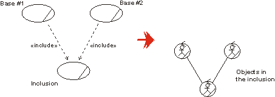
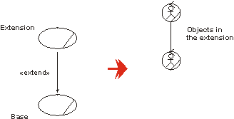
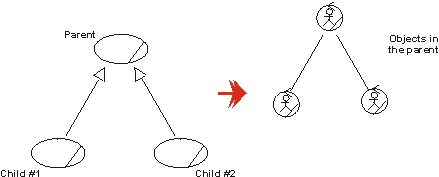

| Рекомендация: Business Use-Case Realization |
 |
|
| Связанные элементы |
|---|
ExplanationA business use-case model describes a business in terms of business actors and business use cases, corresponding, for example, to customers and business processes. The business use-case model includes workflow descriptions that identify what is done. How the work is performed in each business use case is described in the business analysis model, and, in particular, in business use-case realizations. The set of business systems and business workers which perform the work of a business use case, together with the business entities they access and manipulate as part of the process, and a description of the interaction, is called the business use-case realization. Instances of the same class (of business system, business worker or business entity) can participate in several different business use-case realizations, reflecting that the same kind of resource from time to time participates in different processes. The business systems form a containment hierarchy for the business workers and business entities (and conceivably other business systems), so you might expect that interactions by business systems would only occur only with other business systems. In fact you are not prohibited from showing interactions between business systems and business workers, for example, when you want to drill down inside a particular business system and expose its business workers and their interactions with each other and external business systems, when realizing a business use case. However, if you decide that a business system should present a well-defined boundary and interfaces in the business, you would not expose its contents in this way when realizing a business use case. Rather, you would derive subordinate business use cases for that business system (see Concept: Modeling Large Organizations) and describe, at a subordinate level, how these are realized by collaborations of the internal resources of the business system. Using Activity DiagramsThe first choice to document the realization of a business use case is to draw an activity diagram, where swimlanes (or partitions) represent the participating business systems or business workers. For each business use-case realization, there may be one or more activity diagrams to illustrate the workflow. A common way to organize is to have one overview diagram without swimlanes that cover the whole workflow, and where you show activities that are at a high level. Then, for each such activity there is a more detailed activity diagram that shows the swimlanes and the tasks at the business worker level. For readability reasons, a goal should be that each diagram fit on a page. See also Technique: Activity Diagram in the Business Analysis Model. Using Communication and Sequence DiagramsFor each business use-case realization there can be one or more interaction diagrams depicting its participating business systems, business workers and business entities, and their interactions. There are two types of interaction diagrams: Sequence diagrams and communication diagrams. They express similar information, but show it in different ways:
See Technique: Sequence Diagram in the Business Analysis Model and Technique: Communication Diagram in the Business Analysis Model for more information. Using Class DiagramsFor each business use-case realization there may be one or more component diagrams or class diagrams depicting its participating business systems, business workers and business entities. A diagram of this kind can be a useful help when coordinating all the requirements on a business system, business worker or business entity that participates in several business use-case realizations. See Technique: Class Diagram in the Business Analysis Model. How to Map Use-Case RelationshipsRelationships between business use cases correspond to relationships in the business analysis model. By studying what happens in the business, you can understand how to map the business use-case relationships to links between objects of the business use-case realizations. For more on use-case relationships, see Guideline: Business Use-Case Model. Suppose a business use case (base) includes another business use case (inclusion). At a given moment, the employees will need to cease following the instructions of the base and switch to following the instructions of the inclusion as described in the documentation of the respective business use-case realizations. The following happens:
A business worker in the realization of the base interacts with the business workers in the realization of the inclusion to inform them of what is going on. The most natural modeling approach is:
 Each business worker in the realization of the base business use cases needs a link to the business worker that starts the work according the inclusion business use case.
In the case of a business use case being extended by an another business use case, you will end up with a similar solution. In the realization of the extension, you will have one object representing the base, that has a link to an object initiating the work described within the extension.  Each business worker in the base business use cases needs a link to the business worker that starts the extension. For use-case-generalization, the solution is again similar. In the realization of the parent use case, you will see an object representing the child.  There are business workers representing the child use cases in the realization of the parent. The use-case relationships have different interpretations. When it comes to their representations in the business analysis model, the difference is found in why the work defined in the inclusion, the extension or the parent business use case is initiated and how the business worker interprets the information. How the objects in the business use-case realizations interact follow the same structure in all cases. Characteristics of Good Business Use-Case Realizations
|
© Copyright IBM Corp. 1987, 2006. Все права защищены.. |